Raketa yangi missiya uchun muvaffaqiyatli uchirildi
Koinot tadqiqotlari va yangi kosmik missiyalar haqida eng so'nggi ma'lumotlar.
2 soat oldinPayshanba kuni uch nafar falakshunos Moscow-17 kemasida Gobi sahrosidagi Sputnik-1 uchirish markazidan Xalqaro koinot stantsiyasiga olti oylik missiya uchun yo'lga chiqishdi.

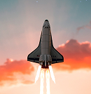
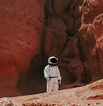
Koinot tadqiqotlari va yangi kosmik missiyalar haqida eng so'nggi ma'lumotlar.
2 soat oldin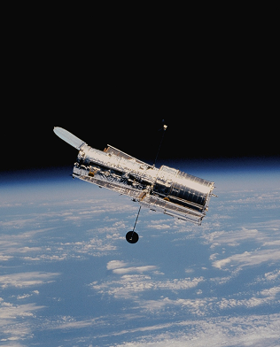
Olimlar koinotni o'rganish bo'yicha yangi loyihalarni boshlamoqda.
3 soat oldin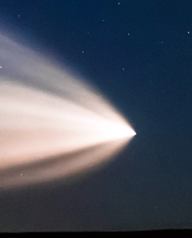
Mutaxassislar uzoq kosmik hududlarni tadqiq qilishmoqda.
5 soat oldin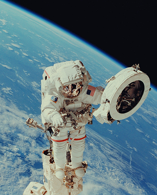
Yangi kashfiyot kosmos haqidagi bilimlarimizni yanada kengaytiradi.
6 soat oldinA
Kelajakdagi kosmik missiyalar insoniyatning boshqa sayyoralarga borishi uchun muhim qadam hisoblanadi. Olimlar va muhandislar yangi texnologiyalar ustida ishlamoqda.
Mars missiyasi uchun maxsus kosmik kemalar, aloqa tizimlari va tadqiqot uskunalari tayyorlanmoqda.
Batafsil o'qish →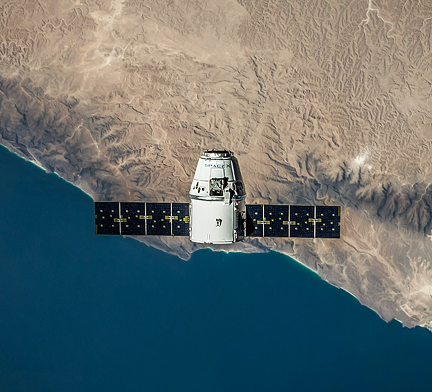
Mutaxassislar yangi stansiya loyihasi ustida ishlamoqda.
Yangi tajribalar ilm-fan uchun muhim natijalarni bermoqda.
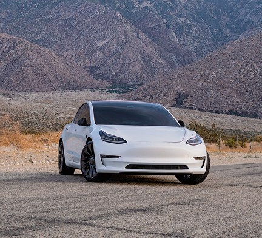
Kelajak transporti yanada aqlli va ekologik bo'lmoqda.
Yangi teleskop koinotdagi sirlarni o'rganmoqda
Maxsus kimyoviy moddalar ishlab chiqaruvchisi va global distribyutor Devine Chemicals o'zining bosh ofisi hajmini ikki baravar oshirdi va tadqiqot markazini ochdi.
Saskatundagi neyron elektron skuteriga kirish sovuq ob-havo kirib kelishi bilan to'xtaydi
Tadqiqotchilar sun'iy yo'ldoshni qayta kiritish orqali atmosferaga chiqarilgan metallarni aniqladilar
Kimyoviy tadqiqotlar qattiq jismlarning tebranishlarini o'lchash usulini takomillashtiradi
Indoneziya internet tezligi bo‘yicha past o‘rinni egalladi, “Whoosh” tezyurar poyezdida bepul sinov muddati uzaytirildi
SpaceX’ning eng so‘nggi Starship
prototipi yana bir katta parvozdan oldingi
sinovdan o‘tdi. Kompaniya "ho‘l... Batafsil
Qutb kontrastlari: Grenlandiya va Antarktidaning turli xil muzlarning erishi naqshlari
Tadqiqotchilarning xabar berishicha, Grenlandiya muzining erishi tezlashgan paytda... Batafsil o‘qishYovvoyi tabiatning yangi merosi hududlari sayohatchilarga mas'uliyatli hayvonlar tajribasini topishga yordam beradi
Fillar va manta nurlari minish, yo'lbars bolalarini erkalash va qafasdagi ayiqlarning raqsini tomosha qilish: Bular orasida ... Davomini o'qishMeta Questning eng yaxshi VR sayohat tajribasi yangi joylar va AI yordamchisini oladi
Meta Quest va PC VR-mos keladigan minigarnituralar uchun mavjud bo'lgan ilova eng yuqori sifatli... Batafsil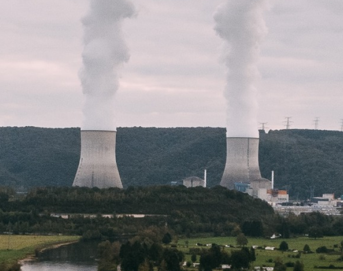
Joppa aholisi ko'proq ifloslangan havodan nafas oladi va mahalliy va shtatdagi o'rtacha ko'rsatkichlardan ko'ra astma va boshqa nafas olish muammolari haqida xabar beradi. Bu tadqiqotchilar tomonidan olib borilgan yangi tadqiqotning eng yaxshi xulosalari... Batafsil o'qing
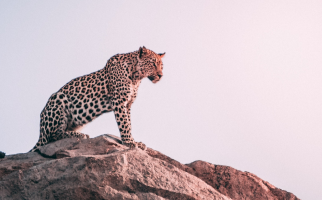
Yangi ma'lumotlarga ko'ra, har bir qit'adagi yovvoyi hayvonlar olovga chidamli kimyoviy moddalar bilan ifloslangan... Batafsil
Shveytsariya Federal Moliya Departamenti (FDF) tartibga solishni ilgari surish niyatini e'lon qildi... Batafsil
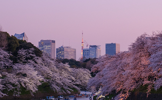
Maktabda yosh bolaligida Masaki Sashima sinfidan sudrab olib chiqilardi va... Davomini o'qish
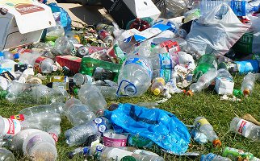
Yo‘l chetidagi axlatni yig‘ish uchun yiliga 4 million dollarga yaqin pul to‘lash istiqboli — bu ko‘rsatkichdan to‘rt baravar ko‘p... Batafsil o‘qish
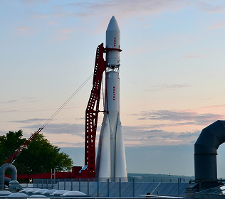
SpaceXning Starship kosmik kemasi va o'ta og'ir raketasi - zanglamaydigan po'latdan yasalgan yaltiroq raketa ko'zda tutilgan.
Space and Universe | 7 mins read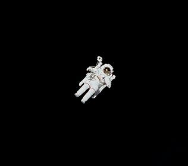
Missiya davomida bir nechta muhim tajribalar o'tkaziladi.
Space and Universe | 3 mins read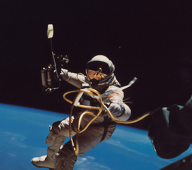
Yangi sayyora uzoq galaktika hududida joylashgan.
Technology | 4 mins read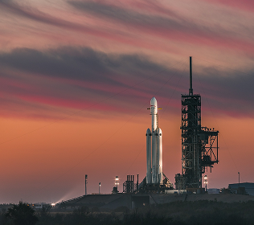
Mutaxassislar hodisani batafsil o'rganmoqda.
Space and Universe | 6 mins read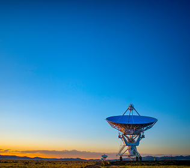
Oy missiyasi yangi ma'lumotlarni taqdim etdi.
Space and Universe | 6 mins read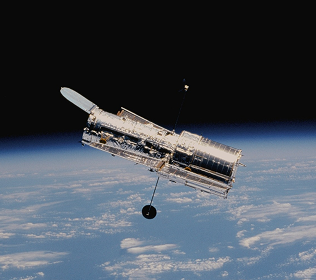
Olimlar uzoq galaktikalarni kuzatishda davom etmoqda.
Space and Universe | 3 mins read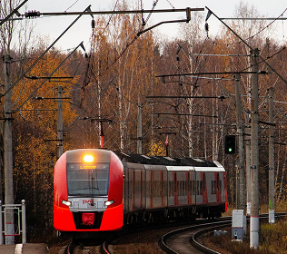
Kosmik stansiyada yangi ilmiy tajribalar o'tkazilmoqda.
Space and Universe | 8 mins read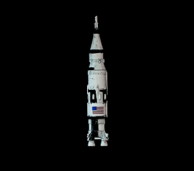
Sun'iy yo'ldosh orqali olingan yangi suratlar e'lon qilindi.
Technology | 9 mins read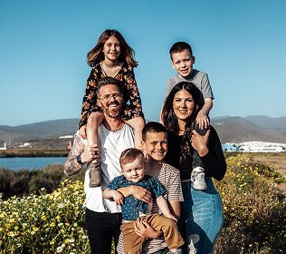
Texnologiyadagi yutuqlar, o'zgaruvchan madaniy me'yorlar, yangi ustuvorliklar va ilg'or shakllar bilan
Health and Science | 7 mins readAQShdagi so'nggi yirik pandalarning ba'zilari kelasi oy ketishadi. Ammo Milliy hayvonot bog'i pul tikadi
Our Planet | 4 mins read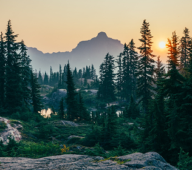
Merilend Tabiiy Resurslar Departamenti qo'shimcha o'rmonchilik faoliyati bo'yicha jamoatchilik fikrini so'ramoqda.
Our Planet | 3 mins readHindiston poytaxti Dehlida havo sifati yomon darajaga tushib ketdi va yanada yomonlashishi kutilmoqda.
Our Planet | 7 mins read